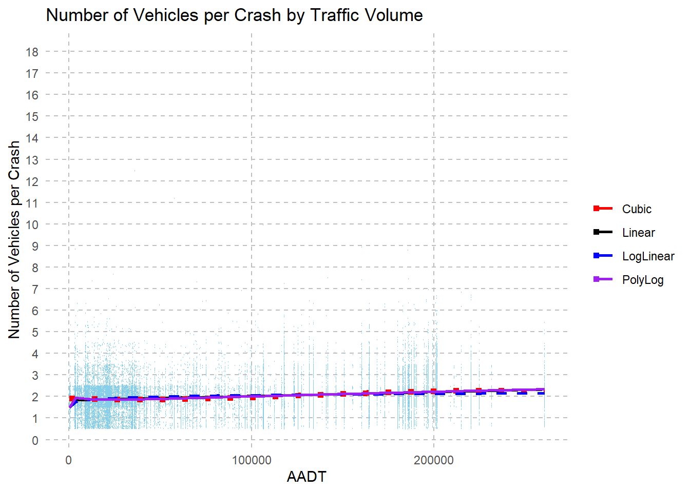
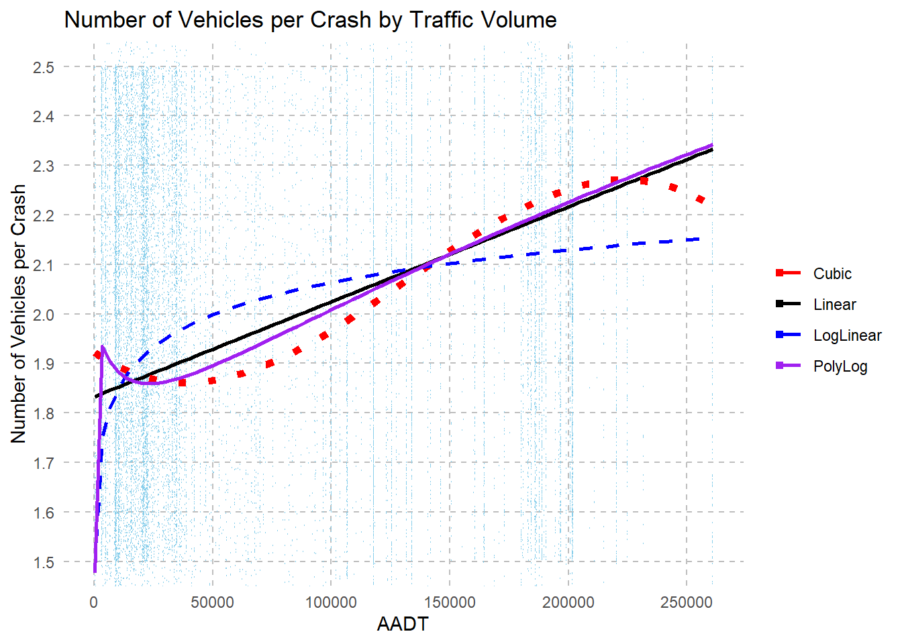

library(MASS)
library(scales)
library(tidyverse)
library(summarytools)
library(stats)
library(kableExtra)
library(ggplot2)
library(hrbrthemes)
library(viridis)
library(stringr)
library(stargazer)
library(sandwich)
library(broom)
library(car)
knitr::opts_chunk$set(echo = TRUE, warning=FALSE, message=FALSE)Final Project
Boston Crash Data - Statistical Analysis of the Number of Vehicles per Crash from 2013 to 2022 by AADT (Traffic Volume)
Hypothesis: The number of vehicles per crash increase as traffic volumes increase in Boston, Massachusetts.
In order to study this hypothesis I will look at publicly available crash data, from the Massachusetts Department of Transportation, specifically crashes in Boston from 2013 to 2022.
This dataset includes 40,296 individual crashes in Boston from 2013-2022 which are represented by each row in the dataset. The dataset has been parsed down from 10 different datasets to specifically include the year, number of vehicles per crash, speed limit of the crash site, AADT (Average Annual Daily Traffic - effectively measuring traffic volume), and two original columns to the data indicating whether the driver was distracted prior to the crash which I pair down to one binary column.
Read in Data
#Read in Combined Data
mydata <- read_csv("Sue-Ellen_Data/2013_2022_Crashes_Boston_Round_5.csv")[, -1]Clean and filter data
#Filter out AADT years with less than 500 observances
mydata <- mydata %>%
mutate(AADT_YEAR = if_else(AADT_YEAR %in% c(2009, 2013, 2014, 2018, 2020), AADT_YEAR, NA))
mydata <- mydata %>%
mutate(AADT = if_else(AADT_YEAR %in% c(0, NA), NA, AADT))
#Filter out values from speed that are abnormal (example: 555 or -55 or 21)
mydata <- mydata %>%
mutate(SPEED_LIMIT = if_else(SPEED_LIMIT %in% c("10", "15", "20", "25", "30", "35", "40", "45", "50", "55", "65"), SPEED_LIMIT, NA))
#Assign Distracted Binary Data
mydata <- mydata %>%
mutate(D_B1 = if_else(str_detect(DRVR_CNTRB_CIRC_CL, "Distracted|Inattention|distraction"), 1, 0)) %>%
mutate(D_B1_2 = if_else(str_detect(DRVR_DISTRACTED_CL, "electronic|External|Other|Passenger"), 1, 0))
mydata<- mydata %>% mutate(Distracted_Binary = if_else(D_B1 %in% c(0), D_B1, NA))
mydata<- mydata %>% mutate(Distracted_Binary = if_else(D_B1_2 %in% c(0), D_B1_2, Distracted_Binary))
mydata<- mydata %>% mutate(Distracted_Binary = if_else(D_B1 %in% c(1), D_B1, Distracted_Binary))
mydata<- mydata %>% mutate(Distracted_Binary = if_else(D_B1_2 %in% c(1), D_B1_2, Distracted_Binary))Dataset Summary
head(mydata[, c("NUMB_VEHC", "AADT", "SPEED_LIMIT", "YEAR", "Distracted_Binary")]) summary(mydata[, c("NUMB_VEHC", "AADT", "SPEED_LIMIT", "YEAR", "Distracted_Binary")]) NUMB_VEHC AADT SPEED_LIMIT YEAR
Min. : 1.000 Min. : 211 Min. :10.00 Min. :2013
1st Qu.: 2.000 1st Qu.: 18500 1st Qu.:30.00 1st Qu.:2015
Median : 2.000 Median : 42594 Median :35.00 Median :2017
Mean : 1.961 Mean : 81152 Mean :37.69 Mean :2017
3rd Qu.: 2.000 3rd Qu.:134028 3rd Qu.:45.00 3rd Qu.:2020
Max. :18.000 Max. :260824 Max. :65.00 Max. :2022
NA's :10920 NA's :9312
Distracted_Binary
Min. :0.000
1st Qu.:0.000
Median :0.000
Mean :0.109
3rd Qu.:0.000
Max. :1.000
NA's :3217 Regressors:
vars <- c("NUMB_VEHC", "AADT", "SPEED_LIMIT", "YEAR", "Distracted_Binary")
options(scipen = 999)
result <- cbind(NV_mean = sapply(mydata[, vars], function(x) mean(x, na.rm = TRUE)),
NV_sd = sapply(mydata[, vars], function(x) sd(x, na.rm = TRUE)))
result <- round(result, 3)
print(result) NV_mean NV_sd
NUMB_VEHC 1.961 0.744
AADT 81152.251 72953.537
SPEED_LIMIT 37.691 11.001
YEAR 2017.434 2.793
Distracted_Binary 0.109 0.311NUMB_VEHC: Number of Vehicles per Crash
AADT: Average Annual Daily Traffic: average number of vehicles that pass a specific point on a road or highway in both directions over the course of a year, typically calculated by summing the traffic volumes for each day of the year and then dividing by 365. A traffic volume metric, and therefore referenced at times in this report as “Traffic Volume”
SPEED_LIMIT: Speed Limit at the particular site of crash. Does not indicate speed of driver.
YEAR: Year of Crash
Distracted_Binary: Driver Distracted 1=Yes, 0=No. I created this binary from the available data, including the two columns, Driver Contributing Circumstances and Driver Distracted. If either of the columns indicated the driver was not distracted, Distracted_Binary will read 0, and prevailing over the preceding rule, if either of the columns indicated the driver was distracted, Distracted_Binary will read 1. However if neither of the columns indicated an observance either way, the crash will read NA.
Linear and Non-Linear Models
Linear_model <- lm(NUMB_VEHC ~AADT, data = mydata)
Cubic_model <- lm(NUMB_VEHC ~ AADT + I(AADT^2) + I(AADT^3), data = mydata)
Quadratic_model <- lm(NUMB_VEHC ~ AADT + I(AADT^2), data = mydata)
LinearLog_model <- lm(NUMB_VEHC ~ log(AADT), data = mydata)
LogLinear_model <- lm(log(NUMB_VEHC) ~ AADT, data = mydata)
LogLog_model <- lm(log(NUMB_VEHC) ~ log(AADT), data = mydata)
PolyLog_model <- lm(NUMB_VEHC ~ log(AADT) + I(log(AADT)^2) + I(log(AADT)^3),
data = mydata)adj_R2 <-rbind(
"Linear" = summary(Linear_model)$adj.r.squared,
"Cubic" = summary(Cubic_model)$adj.r.squared,
"Quadratic" = summary(Quadratic_model)$adj.r.squared,
"LinearLog" = summary(LinearLog_model)$adj.r.squared,
"LogLinear" = summary(LogLinear_model)$adj.r.squared,
"LogLog" = summary(LogLog_model)$adj.r.squared,
"PolyLog" = summary(PolyLog_model)$adj.r.squared)f_statistic <-rbind(
"Linear" = summary(Linear_model)$fstatistic[["value"]],
"Cubic" = summary(Cubic_model)$fstatistic[["value"]],
"Quadratic" = summary(Quadratic_model)$fstatistic[["value"]],
"LinearLog" = summary(LinearLog_model)$fstatistic[["value"]],
"LogLinear" = summary(LogLinear_model)$fstatistic[["value"]],
"LogLog" = summary(LogLog_model)$fstatistic[["value"]],
"PolyLog" = summary(PolyLog_model)$fstatistic[["value"]])adj_f <- cbind(adj_R2, f_statistic)
colnames(adj_f) <- c("adj_R2", "f_statistic")
adj_f adj_R2 f_statistic
Linear 0.03426426 1043.2236
Cubic 0.03726700 380.0314
Quadratic 0.03536785 539.5113
LinearLog 0.02361257 711.3933
LogLinear 0.03085573 936.2446
LogLog 0.02048819 615.4292
PolyLog 0.03487512 354.8252Adjusted R2 and F-Statistic
As the analysis of the adjusted R2 and the f-statistics of the above seven models show, the model with the highest adjusted R2 values is the cubic model. This would demonstrate that the cubic model is the best fit for the data with an adjusted R2 value of 0.037, indicating that the model explains approximately 3.74% of the variability in the Numbers of Vehicles per Crash. The cubic model also has a low f-statistic, suggesting that the model explains a significant amount of variance in the Numbers of Vehicles per Crash.
The three models with the next closest adjusted R2 are: quadratic model, poly log model, and linear model. As the values are so close, it will be useful to visualize the models in a plot.
Plots: Linear, Cubic, LogLinear and PolyLog
mydata %>%
ggplot(aes(AADT, NUMB_VEHC, na.rm = TRUE)) +
geom_point(color = "skyblue", shape = 21, size = 0.1, na.rm = TRUE, position = position_jitter(width = 0.5, height = 0.5)) +
geom_smooth(method = "lm", se = FALSE, aes(color = "Linear"), size = 1, na.rm = TRUE) +
geom_smooth(method = lm, formula = y ~ poly(x, 3), se = FALSE, aes(color = "Cubic"), size = 2, linetype = "dotted", na.rm = TRUE) +
geom_smooth(method = "lm", formula = y ~ log(x), se = FALSE, aes(color = "LogLinear"), size = 1, linetype = "dashed", na.rm = TRUE) +
geom_smooth(method = "lm", formula = y ~ log(x) + I(log(x)^2) + I(log(x)^3), se = FALSE, aes(color = "PolyLog"), size = 1, na.rm = TRUE) +
labs(x = "AADT", y = "Number of Vehicles per Crash", title = "Number of Vehicles per Crash by Traffic Volume") +
theme_minimal() +
theme(
panel.grid = element_blank(),
panel.grid.major = element_line(color = "gray", linetype = "dashed"),
panel.grid.minor = element_blank(),
legend.position = "right"
) +
scale_color_manual(
values = c("Cubic" = "red", "Linear" = "black", "LogLinear" = "blue", "PolyLog" = "purple"),
labels = c("Cubic", "Linear", "LogLinear", "PolyLog"),
name = NULL
) +
scale_y_continuous(breaks = seq(0, 18, by = 1), minor_breaks = NULL)
Plot 1
From the vantage point of the entire dataset, each model does appear to be very similar, it’s no wonder the adjusted R2 were so close in value. The lines are nearly impossible to parse out here, so in the next graph I will zoom in to where the data is most centralized.
mydata %>%
ggplot(aes(AADT, NUMB_VEHC, na.rm = TRUE)) +
coord_cartesian(ylim = c(1.5, 2.5)) +
geom_point(color = "skyblue", shape = 21, size = 0.1, na.rm = TRUE, position = position_jitter(width = 0.5, height = 0.5)) +
geom_smooth(method = "lm", se = FALSE, aes(color = "Linear"), size = 1, na.rm = TRUE) +
geom_smooth(method = lm, formula = y ~ poly(x, 3), se = FALSE, aes(color = "Cubic"), size = 2, linetype = "dotted", na.rm = TRUE) +
geom_smooth(method = "lm", formula = y ~ log(x), se = FALSE, aes(color = "LogLinear"), size = 1, linetype = "dashed", na.rm = TRUE) +
geom_smooth(method = "lm", formula = y ~ log(x) + I(log(x)^2) + I(log(x)^3), se = FALSE, aes(color = "PolyLog"), size = 1, na.rm = TRUE) +
labs(x = "AADT", y = "Number of Vehicles per Crash", title = "Number of Vehicles per Crash by Traffic Volume") +
theme_minimal() +
theme(
panel.grid = element_blank(),
panel.grid.major = element_line(color = "gray", linetype = "dashed"),
panel.grid.minor = element_blank(),
legend.position = "right"
) +
scale_color_manual(
values = c("Cubic" = "red", "Linear" = "black", "LogLinear" = "blue", "PolyLog" = "purple"),
labels = c("Cubic", "Linear", "LogLinear", "PolyLog"),
name = NULL
) +
scale_y_continuous(breaks = seq(0, 10, by = 0.1), minor_breaks = NULL) + scale_x_continuous(breaks=pretty_breaks())
Plot 2
In order to actually see the curves and trends of these lines, I have zoomed the y-axis to coordinates (1.5, 2.5).
As we can see each line has it’s own personality here, but because of how dense the data is, we cannot tell from simply looking at the data which is the best fit. I will highlight a few differences I notice initially:
A dense concentration of the data can be observed in the very beginning of the graph with AADT numbers >50,000, spanning the full height of the adjusted y-axis. Another high concentration happens around 200,000 AADT.
The Linear and Poly Log Models both show a high ending estimate in the last portions of their lines, ending above 2.3.
The Log Linear and Poly Log Models both start drastically lower than the Cubic and Linear Models.
Both the Poly log and the Cubic Models follow a similar curve in the first portion of their lines.
The Cubic model appears to be the only model with a drop off in the final portion and has a sideways S curve.
Now, these are nice observations but in order to understand whether or not they fit the data, I will look at two specific portions of the AADT data to see if the plotted trends match up with the actual data.
Examining the regression parameters through AADT quantiles
quantiles_0_10 <- quantile(mydata$AADT, na.rm = TRUE, probs = c(0.0, 0.01, 0.02, 0.03, .04, 0.05, 0.06, 0.07, 0.08, 0.09, .1))
quantiles_0_10 0% 1% 2% 3% 4% 5% 6% 7% 8% 9% 10%
211 3399 3510 3936 4999 5076 7144 9069 9252 9300 9340 mydata<-mydata%>%
mutate(AADT_subgroup_1 =
case_when(AADT >= 211 & AADT < 3399 ~ "AADT_0-1",
AADT>=3399 & AADT < 3510 ~ "AADT_1-2",
AADT>=3510 & AADT < 3936 ~ "AADT_2-3",
AADT>=3936 & AADT < 4999 ~ "AADT_3-4",
AADT>=4999 & AADT < 5076 ~ "AADT_4-5",
AADT>=5076 & AADT < 7144 ~ "AADT_5-6",
AADT>=7144 & AADT < 9069 ~ "AADT_6-7",
AADT>=9069 & AADT < 9252 ~ "AADT_7-8",
AADT>=9252 & AADT < 9300 ~ "AADT_8-9",
AADT>=9300 & AADT < 9340 ~ "AADT_9-10"))
avgAADT_1 <- mydata %>%
group_by(AADT_subgroup_1) %>%
summarise(mean(NUMB_VEHC),
sd(NUMB_VEHC),
n())
colnames(avgAADT_1) <- c("AADT", "Y_bar", "s", "n")avgAADT_1 %>%
kbl(caption = "Table 1: Y bar, standard deviation, and n for Number of Cars Involved per Crash by Traffic Volume 0% to 10% quantile") %>%
kable_classic()| AADT | Y_bar | s | n |
|---|---|---|---|
| AADT_0-1 | 1.904110 | 0.5958478 | 292 |
| AADT_1-2 | 1.935154 | 0.7488985 | 293 |
| AADT_2-3 | 1.875458 | 0.7420301 | 273 |
| AADT_3-4 | 2.053763 | 0.7638259 | 279 |
| AADT_4-5 | 1.951368 | 0.6923402 | 329 |
| AADT_5-6 | 1.866667 | 0.5468647 | 285 |
| AADT_6-7 | 1.651163 | 0.6334353 | 301 |
| AADT_7-8 | 1.845890 | 0.6150045 | 292 |
| AADT_8-9 | 1.794355 | 0.7269037 | 248 |
| AADT_9-10 | 1.881306 | 0.7222077 | 337 |
| NA | 1.967940 | 0.7479493 | 37367 |
quantiles_90_100 <- quantile(mydata$AADT, na.rm = TRUE, probs = c(0.90, 0.91, 0.92, 0.93, .94, 0.95, 0.96, 0.97, 0.98, 0.99, 1.0))
quantiles_90_100 90% 91% 92% 93% 94% 95% 96% 97% 98% 99% 100%
195999 197004 199278 201025 201752 201752 201752 202055 220549 225084 260824 mydata<-mydata%>%
mutate(AADT_subgroup_2 =
case_when(AADT >= 195999 & AADT < 197004 ~ "AADT_90-91",
AADT>=197004 & AADT < 199278 ~ "AADT_91-92",
AADT>=199278 & AADT < 201025 ~ "AADT_92-93",
AADT>=201025 & AADT < 201752 ~ "AADT_93_to_96",
AADT>=201752 & AADT < 202055 ~ "AADT_96-97",
AADT>=202055 & AADT < 220549 ~ "AADT_97-98",
AADT>=220549 & AADT < 225084 ~ "AADT_98-99",
AADT>=225084 & AADT < 260824 ~ "AADT_99-100"))
avgAADT_2 <- mydata %>%
group_by(AADT_subgroup_2) %>%
summarise(mean(NUMB_VEHC),
sd(NUMB_VEHC),
n())
colnames(avgAADT_2) <- c("AADT", "Y_bar", "s", "n")avgAADT_2 %>%
kbl(caption = "Table 1: Y bar, standard deviation, and n for Number of Cars Involved per Crash by Traffic Volume 90% to 100% quantile") %>%
kable_classic()| AADT | Y_bar | s | n |
|---|---|---|---|
| AADT_90-91 | 2.250814 | 0.7955910 | 307 |
| AADT_91-92 | 2.337793 | 0.8332095 | 299 |
| AADT_92-93 | 2.395480 | 0.9302871 | 177 |
| AADT_93_to_96 | 2.319403 | 0.8349117 | 335 |
| AADT_96-97 | 2.335025 | 0.8416971 | 788 |
| AADT_97-98 | 2.234097 | 0.7961372 | 393 |
| AADT_98-99 | 2.169096 | 0.8587227 | 343 |
| AADT_99-100 | 2.109756 | 0.6738971 | 164 |
| NA | 1.937423 | 0.7317028 | 37490 |
Explanation of Model Choice
By comparing the shape of the models to the shape of the Ybar values of the Number of Vehicles per Crash in the two tables above, we can see that the cubic model does indeed offer the best fit. In the first 10% quantile (Table 1), the Number of Vehicles per Crash reflects some high to low variance from Ybar 1.9 at the 1% quantile to 1.65 at the 7% quantile. This can account for the dip curve in the cubic model as the line attempts to keep up with the variation in Ybar values of the Number of Vehicles per Crash. In the final 90%-100% quantile of the AADT (Table 2), the Number of Vehicles per Crash increases and then tapers off.
While the linear model is most easy to interpret and does okay with representing most of the data, it is too smooth and does not account for the way the Number of Vehicles per Crash changes in different quantiles of the AADT data.
summary(Cubic_model, vcov. = vcovHC, type = "HC1")
Call:
lm(formula = NUMB_VEHC ~ AADT + I(AADT^2) + I(AADT^3), data = mydata)
Residuals:
Min 1Q Median 3Q Max
-1.2712 -0.2547 0.0928 0.1334 16.1162
Coefficients:
Estimate Std. Error t value
(Intercept) 1.92317068910772892565 0.01134985598478604682 169.445
AADT -0.00000336927973276718 0.00000056285169801682 -5.986
I(AADT^2) 0.00000000005085065598 0.00000000000586129212 8.676
I(AADT^3) -0.00000000000000012890 0.00000000000000001679 -7.677
Pr(>|t|)
(Intercept) < 0.0000000000000002 ***
AADT 0.0000000021743937 ***
I(AADT^2) < 0.0000000000000002 ***
I(AADT^3) 0.0000000000000167 ***
---
Signif. codes: 0 '***' 0.001 '**' 0.01 '*' 0.05 '.' 0.1 ' ' 1
Residual standard error: 0.7411 on 29372 degrees of freedom
(10920 observations deleted due to missingness)
Multiple R-squared: 0.03737, Adjusted R-squared: 0.03727
F-statistic: 380 on 3 and 29372 DF, p-value: < 0.00000000000000022Cubic Model
As the summary indicates, the coefficients are all statistically significant at the 99.9% confidence level. The f-statistic is also significant at the 99.9% confidence level. With such extremely small p-values, we can reject the null hypothesis that AADT has no effect on the Number of Vehicles per Crash.
This Cubic Model can be written as:
\[ \widehat{VEHICLES per CRASH} = 1.923- 3.369e^{-6} \times \text{AADT} + 5.085e^{-11} \times \text{I}(AADT ^{2}) - 1.29e^{-16} \times \text{I}(AADT ^{3}) \]
Multiple Regression Models
mod1 <- lm(NUMB_VEHC ~ AADT + I(AADT^2) + I(AADT^3) , data = mydata)
mod2 <- lm(NUMB_VEHC ~ AADT + I(AADT^2) + I(AADT^3) + SPEED_LIMIT , data = mydata)
mod3 <- lm(NUMB_VEHC ~ AADT + I(AADT^2) + I(AADT^3) + SPEED_LIMIT + Distracted_Binary , data = mydata)
mod4 <- lm(NUMB_VEHC ~ AADT + I(AADT^2) + I(AADT^3) + SPEED_LIMIT + Distracted_Binary + YEAR , data = mydata)
mod5 <- lm(NUMB_VEHC ~ YEAR , data = mydata)coefficients_df <- bind_rows(
mod1 =tidy(mod1, conf.int = TRUE),
mod2 =tidy(mod2, conf.int = TRUE),
mod3 =tidy(mod3, conf.int = TRUE),
mod4 =tidy(mod4, conf.int = TRUE),
mod5 =tidy(mod5, conf.int = TRUE))rob_se <- list(sqrt(diag(vcovHC(mod1, type = "HC1"))),
sqrt(diag(vcovHC(mod2, type = "HC1"))),
sqrt(diag(vcovHC(mod3, type = "HC1"))),
sqrt(diag(vcovHC(mod4, type = "HC1"))),
sqrt(diag(vcovHC(mod5, type = "HC1"))))Results of Multiple Regression Models
stargazer(mod1, mod2, mod3, mod4, mod5,
title = "Regressions Using Boston Crash Data",
type = "html",
digits = 12,
header = FALSE,
se = rob_se,
object.names = TRUE,
model.numbers = FALSE,
column.labels = c("(I)", "(II)", "(III)", "(IV)", "(V)"))| Dependent variable: | |||||
| NUMB_VEHC | |||||
| (I) | (II) | (III) | (IV) | (V) | |
| mod1 | mod2 | mod3 | mod4 | mod5 | |
| AADT | -0.000003369280*** | -0.000003827819*** | -0.000003955453*** | -0.000003941358*** | |
| (0.000000568261) | (0.000000639009) | (0.000000657419) | (0.000000658412) | ||
| I(AADT2) | 0.000000000051*** | 0.000000000046*** | 0.000000000048*** | 0.000000000048*** | |
| (0.000000000006) | (0.000000000007) | (0.000000000007) | (0.000000000007) | ||
| I(AADT3) | -0.000000000000*** | -0.000000000000*** | -0.000000000000*** | -0.000000000000*** | |
| (0.000000000000) | (0.000000000000) | (0.000000000000) | (0.000000000000) | ||
| SPEED_LIMIT | 0.006950989000*** | 0.006849752000*** | 0.006852459000*** | ||
| (0.000663658000) | (0.000684122200) | (0.000684025200) | |||
| Distracted_Binary | 0.095911550000*** | 0.095924430000*** | |||
| (0.015868680000) | (0.015864080000) | ||||
| YEAR | -0.001347637000 | 0.005339553000*** | |||
| (0.001786041000) | (0.001330296000) | ||||
| Constant | 1.923171000000*** | 1.721722000000*** | 1.734725000000*** | 4.454296000000 | -8.810883000000*** |
| (0.010939580000) | (0.023457830000) | (0.024265720000) | (3.604010000000) | (2.683741000000) | |
| Observations | 29,376 | 23,769 | 22,446 | 22,446 | 40,296 |
| R2 | 0.037365320000 | 0.042291360000 | 0.044150340000 | 0.044174140000 | 0.000401593900 |
| Adjusted R2 | 0.037267000000 | 0.042130160000 | 0.043937360000 | 0.043918560000 | 0.000376786200 |
| Residual Std. Error | 0.741077900000 (df = 29372) | 0.755093800000 (df = 23764) | 0.753679200000 (df = 22440) | 0.753686600000 (df = 22439) | 0.743992400000 (df = 40294) |
| F Statistic | 380.031400000000*** (df = 3; 29372) | 262.348000000000*** (df = 4; 23764) | 207.299100000000*** (df = 5; 22440) | 172.838900000000*** (df = 6; 22439) | 16.188320000000*** (df = 1; 40294) |
| Note: | p<0.1; p<0.05; p<0.01 | ||||
Linear Hypothesis Test
mod1
#mod1 <- lm(NUMB_VEHC ~ AADT + I(AADT^2) + I(AADT^3) , data = mydata)
linearHypothesis(mod1, "AADT=0",
vcov. = vcovHC(mod1, type = "HC1"))linearHypothesis(mod1, "I(AADT^2)=0",
vcov. = vcovHC(mod1, type = "HC1"))linearHypothesis(mod1, "I(AADT^3)=0",
vcov. = vcovHC(mod1, type = "HC1"))linearHypothesis(mod1, c("I(AADT^2)=0", "I(AADT^3)=0"),
vcov. = vcovHC(mod1, type = "HC1"))mod2
#mod2 <- lm(NUMB_VEHC ~ AADT + I(AADT^2) + I(AADT^3) + SPEED_LIMIT , data = mydata)
linearHypothesis(mod2, "SPEED_LIMIT=0",
vcov. = vcovHC(mod2, type = "HC1"))mod3
#mod3 <- lm(NUMB_VEHC ~ AADT + I(AADT^2) + I(AADT^3) + SPEED_LIMIT + Distracted_Binary , data = mydata)
linearHypothesis(mod3, "AADT=0",
vcov. = vcovHC(mod3, type = "HC1"))linearHypothesis(mod3, c("I(AADT^2)=0", "I(AADT^3)=0"),
vcov. = vcovHC(mod3, type = "HC1"))linearHypothesis(mod3, "SPEED_LIMIT=0",
vcov. = vcovHC(mod3, type = "HC1"))linearHypothesis(mod3, "Distracted_Binary=0",
vcov. = vcovHC(mod3, type = "HC1"))linearHypothesis(mod3, c("SPEED_LIMIT=0", "Distracted_Binary=0"),
vcov. = vcovHC(mod3, type = "HC1"))mod4
#mod4 <- lm(NUMB_VEHC ~ AADT + I(AADT^2) + I(AADT^3) + SPEED_LIMIT + Distracted_Binary + YEAR , data = mydata)
linearHypothesis(mod4, "AADT=0",
vcov. = vcovHC(mod4, type = "HC1"))linearHypothesis(mod4, c("I(AADT^2)=0", "I(AADT^3)=0"),
vcov. = vcovHC(mod4, type = "HC1"))linearHypothesis(mod4, "SPEED_LIMIT=0",
vcov. = vcovHC(mod4, type = "HC1"))linearHypothesis(mod4, "Distracted_Binary=0",
vcov. = vcovHC(mod4, type = "HC1"))linearHypothesis(mod4, c("SPEED_LIMIT=0", "Distracted_Binary=0"),
vcov. = vcovHC(mod4, type = "HC1"))linearHypothesis(mod4, "YEAR=0",
vcov. = vcovHC(mod4, type = "HC1"))linearHypothesis(mod4, c("SPEED_LIMIT=0", "Distracted_Binary=0","YEAR=0"),
vcov. = vcovHC(mod4, type = "HC1"))Explanation of Multiple Regression Model Choice
In order to explain the relationship between the Number of Vehicles per Crash and Traffic Volume (AADT), I wrote 5 regression models including additional the additional variables: speed limit, distracted driver, and year(of crash). Models 1 through 3 exhibit robust significance both in terms of individual coefficients and the overall F-statistics. However, models 4 and 5 demonstrate that the particular year of the accident has little to no statistical significance when regressed with other regressors. When isolated in a regression against the Number of Vehicles per Crash, Year has a high level of significance, but has a very small adjusted R2.
Concerning adjusted R-squared values, F-statistics and p-values, model 3 is the best fit. The formula for model 3 is as follows:
\[ \begin{align*} \widehat{\text{VEHICLES per CRASH}} &= 1.7347 - 3.369e^{-6} \times \text{AADT} \\ &\quad + 4.8e^{-11} \times \text{I}(AADT^2) - 1.214e^{-16} \times \text{I}(AADT^3) \\ &\quad + 0.00685 \times \text{SPEED\_LIMIT} + 0.095 \times \text{Distracted\_Binary} \end{align*}\]
Among the variables considered and analyzed, AADT (Average Annual Daily Traffic) has a significant affect on vehicles per crash across all models. In model 3, while holding I(AADT^2), I(AADT^3), SPEED_LIMIT, and Distracted_Binary constant, a 1 unit change in AADT results in a -0.00000396 change in the Number of Vehicles per Crash. While the coefficient is negative, and indicates that an increase in AADT results in a decrease in the Number of Vehicles per Crash, the interpretation needs to be slightly more nuanced. Due to the variance in how the regressor behaves at different levels, the inclusions of all levels of the cubic model are important in deciphering an accurate estimate.
The inclusion, through the cubic model, squared and cubed terms for AADT, represented by I(AADT^2) and I(AADT^3), in models 1 through 4 contribute to the model’s explanatory power. These higher-order terms capture those potential non-linear relationships between AADT and the dependent variable. In all models, I(AADT^2) and I(AADT^3) coefficients are statistically significant, which means the curvature of the relationship between AADT and the number of vehicles per crash is also relevant to the model. So, while AADT indicates a decrease in the number of vehicles per crash, the higher-order terms of the cubic model do not follow this linear pattern and will indicate increases along different levels of AADT, as we saw earlier on Plot 2.
When included in the models, speed limit also demonstrates statistical significance with a consistently positive coefficient estimate. This implies that higher speed limits are associated with an increase in the number of vehicles per crash. The binary variable for Distracted Drivers, when included in models 3 and 4 and also demonstrated a significant positive effect on the number of vehicles per crash. In model 3 with all other variables (AADT, I(AADT2)I(AADT2), I(AADT3)I(AADT3), SPEED_LIMIT) held constant, the coefficient estimate for Distracted_Binary is 0.0959. This means that for every one-unit increase in the Distracted_Binary variable while keeping all other factors constant, the expected change in the Number of Vehicles per Crash is an increase of 0.0959. This data suggests that crashes involving distracted driving tend to involve more vehicles.
The adjusted R2 for this model is 0.04393736, which means that this model accounts for 4.4% of the variation in Number of Vehicles per Crash. The remaining variability (95.6%) is attributed to other factors not considered in the model. While model 3 offers insight into the relationship between the number of vehicles per crash, AADT, speed limit, and distracted drivers there are most certainly other factors not included that influence crash outcomes.
What I had initially anticipated with this project was that the Number of Vehicles per Crash were increasing over time. I was only able to analyze the data over 10 years, and looking here at the fifth model we can see how small the adjusted R2 is for lm(NUMB_VEHC ~ YEAR), with Year only accounting for .04% of the variation in the Number of Vehicles per year. The F-statistic with a value of 16.19 and an associated p-value of 5.745e-05, indicate the regression is highly statistically significant, with strong evidence to suggest that the model as a whole has explanatory power and there is evidence of a relationship between Number of Vehicles per Crash and Year.
However, when regressed with the main regressor for this report, AADT (mod4), Year loses its significance as does the Number of Vehicles per Crash. The F statistic still remains significant in mod5, but the loss of significance of the Year and Number of Vehicles per Crash lead me to believe Year is not the most beneficial regressor in considering Number of Vehicles per Crash without more extensive data. Continuing on this trend of discounting year as a beneficial regressor, when performing a linear hypothesis where Year is set to 0, the p-value increases to greater than the significance level of 0.05. In this context, its reasonable to conclude that Year does not have a substantial impact on the Number of Vehicles per Crash.
Limitations
Scope of Data
The comprehensive cleaning of data for such a large dataset within a limited time frame, creates some challenges. This is a project that could take years of parsing through the original annual Crash datasets produced by MASS DOT. Some data present in the original dataset that could provide more insight into the exploration of the Number of Vehicles per Crash include: text-based columns that categorize the contributing factors to a crash, individualdriver demographics, weather and road condition data and the massive field of geospatial data. The substantial depth and breadth of this dataset offer the potential for extracting robust analytical, potentially exciting data.
Data Cleaning
One limitation within the data itself is that there are mistakes. For instance, when initially cleaning the Speed Limit column, I noticed outliers like -555 or 1 mph that could not have been real numbers. They might have meant something to the person entering the data, but I could not glean any insight, so I removed this data. Additionally there was AADT data that I also removed based off of an intuition that it was not accurate. I removed AADT data and returned them to “NA” if the AADT_Year column (which notes what year the AADT data was collected) were odd years (like 1897), or included less than 100 readings per year. Cleaning the data in this way can remove outliers that are nonsensical (like -555 mph) but can also remove outliers that are simply outliers and completely accurate.
AADT Year
The AADT values were most recently calculated in 2020 and 2018. There are no AADT values for the past 3 years.Unfortunately, due to the nature of the cleaning process, I was unable to completely organize data by the year the AADT was derived. If I was able to disaggregate this data, there may have been more interesting data analysis possible. However, the MassDot routinely uses AADT data from previous years when referring to crashes, resulting in 5+ years difference between the recorded AADT and the crash.
Bibliography
IMPACT. Data Extract. 2023. https://apps.impact.dot.state.ma.us/cdp/home
RStudio Team (2020). RStudio: Integrated Development for R. RStudio, PBC, Boston, MA URL http://www.rstudio.com/.